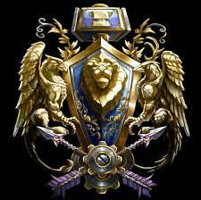

Jaskinia WoW - serwis fanowski |
|||||||||||||||||||||||||||||||||||||||||||||||||||||||||||
|
Strona Główna Przymierze Horda Ankieta |
Przymierze„Ludzie, nocne elfy, krasnoludy i gnomy tworzą wspaniałe Przymierze. Dumne i szlachetne, odważne i mądre rasy pracują razem, by zachować ład w Azeroth. Przymierze kieruje się honorem i tradycją. Jego władcy to wybrańcy sprawiedliwości, nadziei, wiedzy i wiary.”―Opis Przymierza  Przymierze (również znane jako Wspaniałe Przymierze lub Nowe Przymierze) jest jednym z dwóch głównych sojuszy politycznych zrzeszających śmiertelne rasy zamieszkujące planetę Azeroth, razem z Hordą, która jest ich rywalem. Jej poprzednik dziś znany jako Stare Przymierze, również zwany był Przymierzem Lordaeronu lub Przymierzem Ludzi, Elfów i Krasnoludów. Jednak Przymierze zostało zmuszone do przeniesienia masy swoich sił do Kalimdoru i południowych królestw Azeroth: Wichrogrodu i Khaz Modan, po tym jak Plaga i kontrolujący ją Płonący Legion zniszczyli Królestwo Lordaeronu. Stolicą frakcji jest miasto Wichrogród, gdzie rezyduje Wielki Król, lider całej frakcji reprezentujący sprawy zewnętrzne i wewnętrzne oraz kieruje wojskami organizacji jako jej głównodowodzący. Chociaż Przymierze straciło wielu członków, zyskało w zamian nowych sojuszników. Na przymierze składają się: ludzie z Siedmiu Królestw, nocne elfy z Teldrassilu, krasnoludy z Ironforge oraz gnomy z Gnomereganu. Klasy dostępne dla ras Przymierza
Aby dowiedzieć się o kombinajach ras i klas w najnowszym dodatku Kliknij tutaj | ||||||||||||||||||||||||||||||||||||||||||||||||||||||||||
Jaskinia WoW - serwis fanowski |
|||||||||||||||||||||||||||||||||||||||||||||||||||||||||||